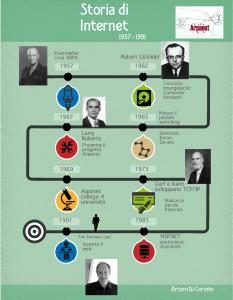

")

| Internet, prima di essere chiamata così, era nata nel 1969, si chiamava ancora Arpanet, dal nome dell’agenzia di ricerca americana che l’aveva progetta, l’Arpa (Advanced Research Project Agency) e aveva cominciato a usare i protocolli che ancora la fanno funzionare, cioè il TCP/IP (transfer Control Protocol/Internet Protocol) solo molto più tardi, nel 1983. Quando il TCP/IP diventò lo standard di comunicazione della rete comincerà a chiamarsi così, Internet, per distinguerla dalle tecnologie che la facevano funzionare e che si chiamavano internet con la minuscola. Nel 1986 la chiamavano ancora Arpanet, o meglio Arpanet era la rete dei centri di ricerca accademici a cui l’Italia si collegò. |  |
|
Nel corso degli anni ’60 diverse persone si adoperarono per portare avanti il progetto di una rete di computer in modo concreto. Una decisione importante fu quella di spostare la sperimentazione delle idee dal contesto militare a quello della ricerca e, in particolare, dell’università. Il progetto migrò così dagli ambienti strettamente militari a quelli universitari. I primi esperimenti svolti nella seconda metà degli anni ’60 non diedero i frutti sperati, ma le cose cominciarono ad andare meglio sperimentando la tecnica della commutazione di pacchetto (packet switching). Inoltre si decise che per ogni nodo della rete sarebbe stato presente un apposito computer di piccole dimensioni (battezzato Interface Message Processor, IMP) con il compito specifico di gestire le comunicazioni con gli altri nodi. |